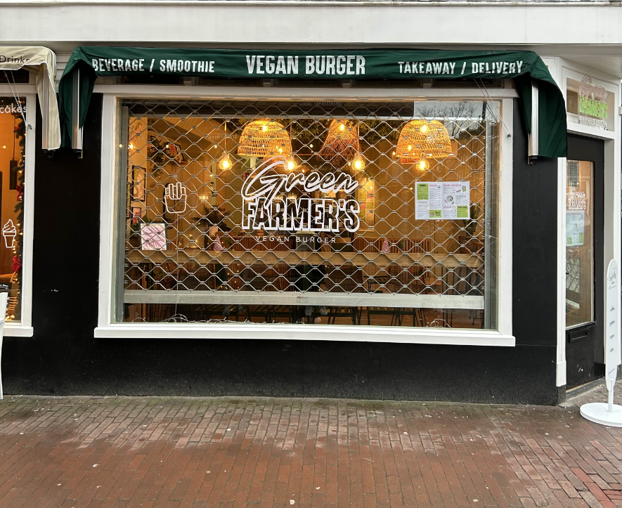

SPOTLIGHT VAN DE WEEK
GREEN FARMER'S AMS
OVER GREEN FARMER'S
Green Farmer's is een vegan restaurant opgericht door Olivier Sarfati en Dan Benhaim tijdens de coronaperiode. Het concept draait om het aanbieden van heerlijke, duurzame plantaardige gerechten, waarbij vooral vegan burgers centraal staan. Het eerste filiaal opende in Parijs en combineert een minimalistische uitstraling met een sterke focus op ecologische waarden. Het initiatief ontstond vanuit een gedeelde passie voor plantaardig eten en de wens om een positieve impact op het milieu te maken. Door een toegankelijke en smakelijke ervaring te bieden, wil Green Farmer's mensen inspireren om vaker voor een vegan lifestyle te kiezen. Sinds 2024 is er ook een Green Farmer’s in Amsterdam geopend.
BEST SELLERS
We hebben onderzocht en gekeken wat de best sellers zijn en hebben die voor je op een rijtje gezet.
De smash truffel
De small farmer
De green chicken
CONTACT
ADRES: Westerstraat 189, 1015 MA Amsterdam
TEL: 020 626 2760